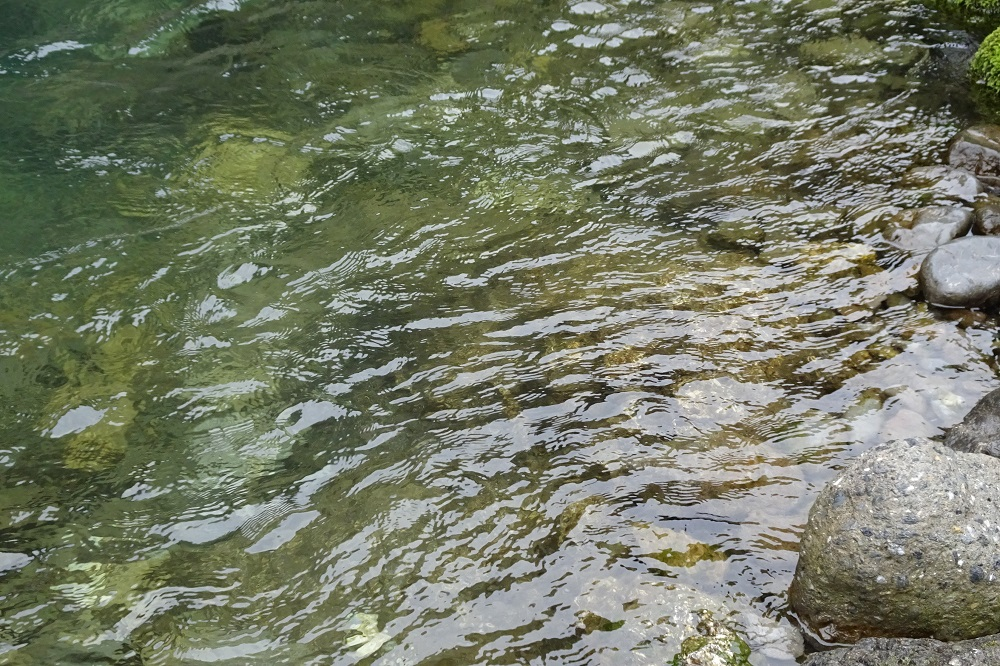

ドレ: ピアノ五重奏曲
マルタンのアルバムからの繋がりで、ギュスターヴ・ドレという知らない作曲家に出会った（フランスの有名な版画家ポール・ギュスターヴ・ドレとは別人）。『スイスの五重奏曲』というタイトルの最近出たアルバムで、ドレ、マルタン、バックという、いずれもフランス語圏の三人の作曲家の作品を収めたもの。ドレは1866年生まれでドビュッシーと近い世代になる。ドビュッシーの『牧神の午後への前奏曲』の初演を指揮したことでも知られているらしい。
Gustave Doret: Piano Quintet
Adalberto Maria Riva (pf)
Melos Ensemble Wien
(2021-22)
1925年の作品だが19世紀の香りが濃厚で、親しみやすくロマンティック、適度なめりはりを持ち、長すぎず短すぎず、とにかく「ちょうどいい」という言葉がぴったりの曲である。特に中間の第2,第3楽章にはとても美しい瞬間がいくつかある。余計なことかもしれないが、第3楽章の最初の主題は『シェヘラザード』（リムスキー＝コルサコフ）のシャフリアール王の主題とそっくり。意図的なものかどうかはわからないが。（ついでに言うと、第4楽章真ん中あたりに出てくる四七抜き五音音階のテーマも、昔のTVヒーローを思わず思い浮かべてしまう空似メロティーだ。）
ウィーン・メロス・アンサンブルというのはメロス四重奏団やイギリスのメロス・アンサンブルと名前が似ているがまったく別の、5人からなるグループ（ヴァイオリン×2, ヴィオラ、チェロ×2）。このアルバムは録音がとても好ましく、弦もピアノも味わい深い。特にピアノの伸びと芯のある音色は秀逸。
一緒に入っているマルタンのパヴァーヌ『時の色』は以前に取り上げたアルバムにもあったが、ドレの後で聴くと一層典雅で端正な美しさが際立つ。フリッツ・バックの『ピアノ五重奏のための詩曲』は、人生のさまざまな節目をテーマにした、これもわかりやすい曲で、一言でいうと「起承転結」を絵にかいたような音楽だが、ちょっと引っ掛かりが少ない。

(Jul. 15, 2023)